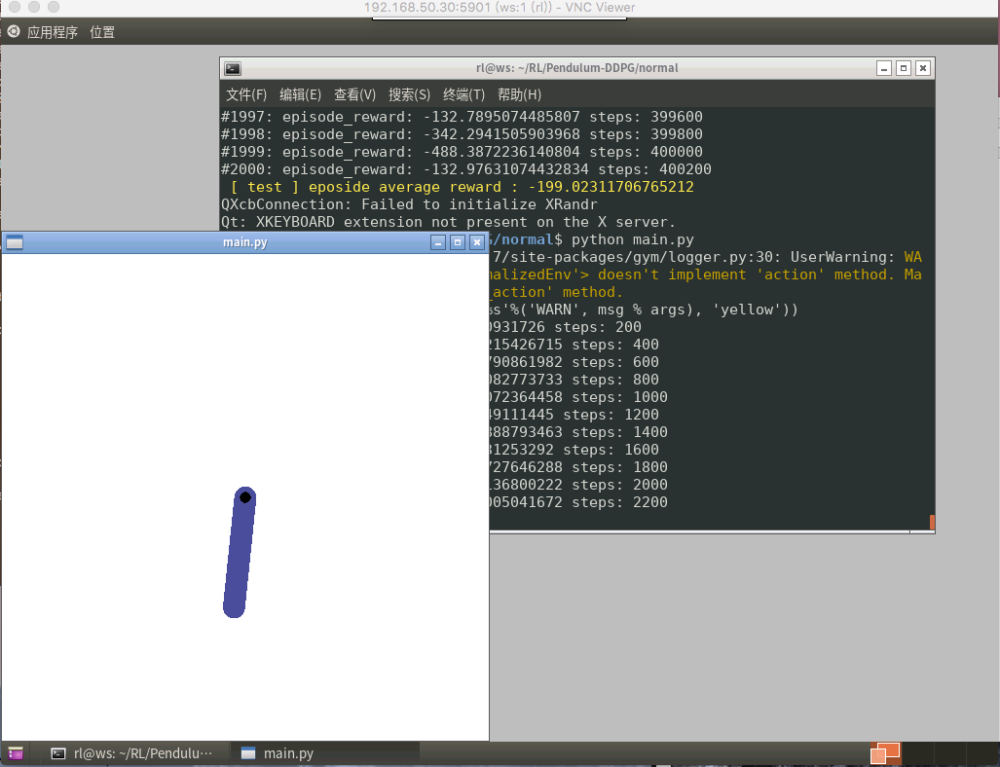

在ubuntu上安装vnc服务
故事起因
由于需要运行一些桌面程序，但是又没有多余的地方放置显示器以及鼠标键盘balaba乱七八糟的东西，于是就想在跑代码的机器上开启共享桌面，然后在自己的座位上用写代码的机器远程桌面连接上去。
最初的想法
最初在网上搜索的都是使用系统原生自带的桌面共享实现的。参考
sudo apt install dconf-editor
选择 org->gnome->desktop->remote access->require encrytion 选择OFF
然后重启桌面共享服务：Settings-> Sharing-> Screen Sharing:设置 允许远程连接，设置密码
重启ubuntu后在其他电脑上用vncviewer登录 ip:5900 输入密码
此种方法也能实现远程桌面连接，而且远程桌面和服务器上的桌面环境是同步的，使用的也是原生的GNOME 3环境。
但是。。。。
此种方法有一个弊端，必须要连上屏幕、键盘、鼠标，手动登录系统后，才能在别的地方连接上。直接冷启动是连不上的。
网友)的说法是，vnc和GNOME 3不兼容，Ubuntu系统自带的屏幕共享是Ubuntu自己开发的Vino-Server，必须要先登录，创建一个session后才能从远程连接上去。
果断放弃这种方式。
最终解决方案
安装所需环境
sudo apt update
sudo apt install vnc4server
sudo apt install --no-install-recommends ubuntu-desktop gnome-panel gnome-settings-daemon metacity nautilus gnome-terminal -y
配置
先用命令vncserver :1使其自动创建配置文件~/.vnc/xstartup， 然后使用命令vncserver -kill :1断开连接。
然后打开配置文件~/.vnc/xstartup在x-window-manger &后边添加下边内容
gnome-session &
gnome-panel &
gnome-settings-daemon &
metacity &
nautilus &
dbus-launch gnome-terminal & # 这一项是为了解决连接后无法打开terminal的问题
可以在~/.vnc/xxx.log中查看vncserver的运行信息。
我当时先是连接上后无法打开terminal后，查看log显示下边的报错信息。然后参照这篇blog输入了上边那条命令 ： dbus-launch gnome-terminal &
Error constructing proxy for org.gnome.Terminal:/org/gnome/Terminal/Factory0: 为 org.gnome.Terminal 调用 StartServiceByName 出错：已到超时限制
完整的xstartup文件内容如下
#!/bin/sh
# Uncomment the following two lines for normal desktop:
# unset SESSION_MANAGER
# exec /etc/X11/xinit/xinitrc
[ -x /etc/vnc/xstartup ] && exec /etc/vnc/xstartup
[ -r $HOME/.Xresources ] && xrdb $HOME/.Xresources
xsetroot -solid grey
vncconfig -iconic &
x-terminal-emulator -geometry 80x24+10+10 -ls -title "$VNCDESKTOP Desktop" &
x-window-manager &
gnome-session &
gnome-panel &
gnome-settings-daemon &
metacity &
nautilus &
dbus-launch gnome-terminal &
修改系统的默认启动环境
既然要将机器放到角落里去吃灰，当然要关闭桌面环境了。
Ubuntu 18.04和别的Linux系统不同，修改默认启动环境要使用下边命令
默认以字符界面启动：
sudo systemctl set-default multi-user.targe
在字体界面系统桌面环境：
sudo systemctl start lightdm
默认以图形界面方式启动：
sudo systemctl set-default graphical.target
最终效果

启动训练代码，然后关闭窗口，随时重新连接查看运行结果。美滋滋。。。。